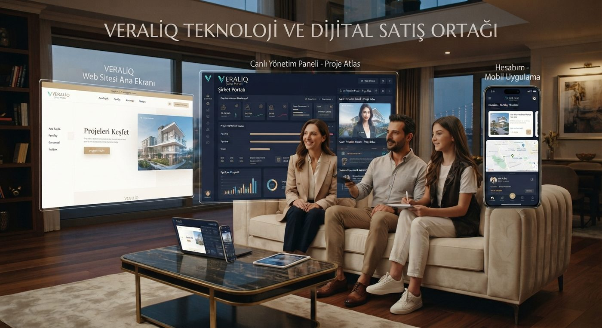
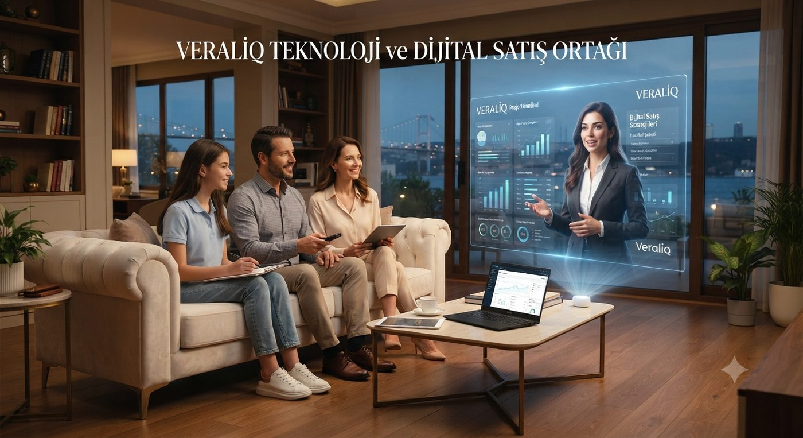

Add AI-Powered Employees to Your Sales Team
Müşterilerinizi karşılayan, projelerinizi ve ürünlerinizi canlı sunan, portföy ve fiyat bilgilerini aktaran, ihtiyaçlarını anlayan, lead oluşturan, randevu alan, takip yapan ve şirketinizin kuralları dahilinde satış sürecini ilerleten yapay zekâ satış asistanları.
Projelerinizi, fiyatlarınızı, ödeme planlarınızı ve satış kurallarınızı VERALIQ'a öğretin — dijital satış asistanlarınız müşterilerinizle çalışmaya başlasın.

Şirketiniz tek bir Agent ile sınırlı kalmaz — görev bazlı birden fazla dijital çalışanı bir araya getirip kendi "AI Departmanı"nızı kurabilirsiniz. Agent'lar gerektiğinde birbirine görev devreder.
Her modül bağımsız çalışacak şekilde tasarlanmıştır; ihtiyacınıza göre tek başına ya da birlikte devreye alınabilir.
İsimlendirilmiş, şirketinize özel eğitilmiş dijital satış temsilcisi.
Gelen her lead otomatik karşılanır, nitelendirilir ve önceliklendirilir.
Müşterinin bütçe ve tercihine göre uygun proje/portföy otomatik eşleşir.
Gerçek zamanlı sesli konuşma; yazıya dökülü klasik chat deneyimi değil.
Kendi CRM'inizi bağlayın veya dahili CRM'i kullanın — stok/fiyat otomatik senkronize olur.
Karar vermeyen müşteriyi nazikçe hatırlatır, özel günleri not alır.
Konuşma, dönüşüm ve fırsat verileri tek panelde raporlanır.
Admin panelinden Agent'ların ismini, görevini, sesini ve yetkilerini yönetin.
Bu görsel, portalın hedeflenen tasarım dilini gösterir — canlı, çok kiracılı portal inşası yol haritamızın bir sonraki fazında.

Agent mimarisi platform seviyesinde tasarlandı — tek satır kodla kendi web sitenize, portalınıza veya mobil uygulamanıza ekleyin.
Her şirketin proje ve müşteri verisi ayrı tutulur; Agent yalnızca kendi şirketinizin verisiyle konuşur.
Admin, portal ve CRM erişimleri rol bazlı yetkilendirmeyle kontrol edilir.
Müşteri verisi açık rıza ile toplanır; saklama ve silme talepleri için hazır süreç.
Konuşma ve işlem kayıtları zaman damgalı olarak tutulur, denetlenebilir.
Şirketlerin kendi dijital çalışanlarını oluşturduğu, yetkilendirdiği ve çalıştırdığı bir AI Workforce platformudur. İlk kullanım alanı gayrimenkul ve inşaat satışıdır.
İsim, görev, uzmanlık alanı ve yetkileri tanımlanmış; şirketinize özel yapılandırılan, gerçek zamanlı konuşabilen dijital satış çalışanıdır.
Evet. Agent yalnızca sizin yüklediğiniz proje, fiyat, ödeme planı ve portföy verisiyle konuşur — başka şirketin verisiyle karışmaz.
Hayır. CRM verinizi kaydeder, VERALIQ o veriyle müşterinizle gerçek zamanlı konuşur ve satış sürecini yürütür. Mevcut CRM'inize entegre olur.
Evet. Aynı Agent; veraliq.com, kendi web siteniz, müşteri portalınız ve proje siteniz dahil birden fazla ortamda çalışabilir — tek Agent, çoklu kanal.
Evet. Mobil deneyimde de Agent görüntüsü ve gerçek zamanlı sesli görüşme ana unsurdur; admin kullanıcı Agent, lead ve performans verilerini mobilden izleyebilir.
Evet, WhatsApp desteklenen kanallardan biridir; Agent aynı bilgiyle web, WhatsApp ve diğer kanallarda tutarlı şekilde çalışır.
Evet. Konuşma sırasında gerektiğinde fiyat, ödeme planı, konum, fotoğraf ve proje özellikleri gibi bilgi kartları ekranda gösterilebilir.
Evet. Örneğin karşılama Agent'ı yatırım odaklı bir müşteriyi fark ettiğinde, görevi yatırım danışmanı Agent'a devredebilir; bu görev devri "AI Departmanı" mantığının temelidir.
Hayır. Agent ilk temas, bilgilendirme ve nitelendirme sürecini yürütür; nitelikli lead'i satış ekibinize aktarır, karar ve kapanış süreci sizin ekibinizdedir.
Evet. Şirket verileri izole tutulur (tenant isolation), erişimler rol bazlı yetkilendirmeyle kontrol edilir ve KVKK yaklaşımıyla işlenir.
Agent, gerektiğinde açıkça "VERALIQ tarafından desteklenen AI dijital satış agent'ıyım" ifadesini kullanır; her Agent kartında bu bilgi ayrıca belirtilir.
Şirketinize özel Agent'ınızı birlikte tasarlayalım. Kendi proje verinizle çalışan bir demo Agent kurup canlı gösterelim.
Mikrofon izni verilmedi. Elif Kaya sizi duyamıyor — tarayıcı ayarlarından mikrofon iznini açıp sayfayı yenileyin. Yazarak da devam edebilirsiniz.